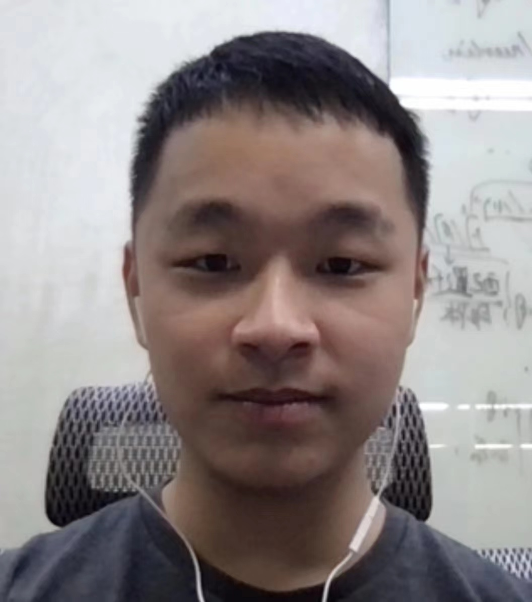

|
Hongyu Ke
|
 |
Education
B.S. degrees in Applied Math & Stats,
B.S. degrees in Pure Mathematics
StonyBrook University
Contact
Email: hke3 at student dot gsu dot edu
|
About me
I received the B.S. degree in Applied Math from School of Information Science and Technology (SIST), ShanghaiTech University in 2021.
And recently I have been a computer vision algorithm intern in Tencent, Shenzhen.
Research
My research interests include
Publications
-
Yiren Lu, W. Wei, "End to End Face Reconstruction via Differentiable PnP", In: Proceedings of the European Conference on Computer Vision Workshops (ECCVW), 2022: In Press.
-
X. Zhi, J. Hou, Yiren Lu, L. Kneip, and S. Schwertfeger, "Multical: Spatiotemporal Calibration for Multiple IMUs, Cameras and LiDARs", IEEE/RSJ International Conference on Intelligent Robots and Systems (IROS), 2022: IEEE Press, In Press.
-
J. Cai, J. Hou, Yiren Lu, H. Chen, L. Kneip and S. Schwertfeger, “Improving CNN-based Planar Object Detection with Geometric Prior Knowledge”,
2020 IEEE International Symposium on Safety, Security, and Rescue Robotics (SSRR), 2020, pp. 387-393.
Technical Skills
Programming Lauguage: Python, C, C, Rust, R.
Computer Vision: OpenCV, PCL, Open3D, ffmpeg.
ML/DL: PyTorch, TensorFlow, SKlearn, Pandas, NumPy, SciPy.
Robotics: ROS, Gazebo, Rviz.
Natural Language Processing: Jieba, BoW, NLTK.
|